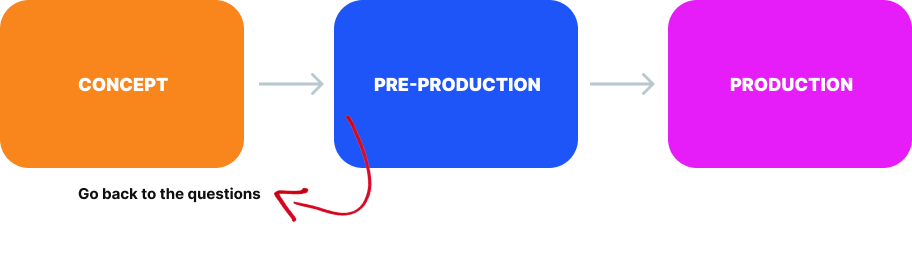
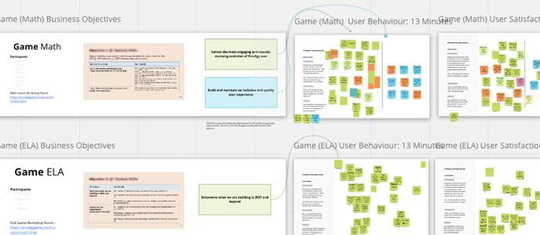
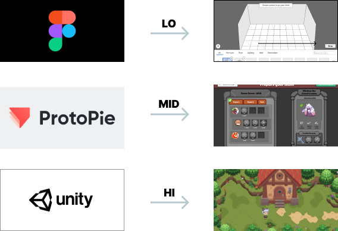

Design Process
I’ve gained a wide range of skills from my diverse experience that I’ve incorporated into my design work today! In the last few years, I’ve been able to sharpen these skills to find the best solutions for children and learning at Prodigy Education.
First off, always start with questions! I’ve found this approach works best outside of a production team mindset.
I love approaching a whiteboard and ideating with peers before anything is set in stone. I’ve facilitated Design Sprint workshops for a variety of game features and goals (which I’ll cover in detail within my Case Studies ).
From there, I’ve learned a lot about ‘fidelity’ in a project. Using these Questions as a guide (and ideally a User Research Script) I’ve found this will allow the team to choose the right type of prototype to get the answers we’re looking for (as quickly as possible, with minimal effort invested).
I’ve created several prototypes using Figma, GameMaker, ProtoPie and Unity. Working with the insights from user testing, I’ll typically present the findings to the team where we can decide on the best path forward.

When we’re ready to move from ideation into production, I’m experienced in turning these insights into actionable business-facing presentations and goals. I’ve helped establish VLRs alongside Product Managers to guide the product through its most valuable iterations.
Ready to dig into some examples? Then read on!